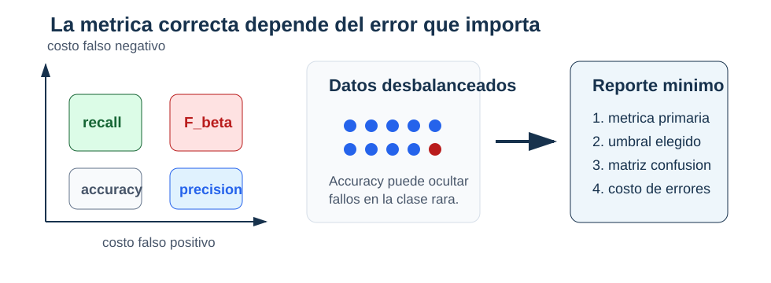

Capítulo 4: Regresión logística
Clasificación binaria, log-loss, métricas y umbrales
Pregunta aplicada
¿Cómo obtiene un modelo una probabilidad estimada de clase positiva y cómo se fija una regla de clasificación cuando los errores tienen costos distintos?
Objetivos del capítulo
Al terminar este capítulo deberías poder:
- formular clasificación binaria con probabilidades;
- explicar la función sigmoide;
- interpretar log-odds;
- escribir la log-loss binaria;
- derivar el gradiente de la pérdida logística;
- calcular matriz de confusión, accuracy, precision, recall y F1;
- elegir un umbral con validación según costos de error;
- comparar un clasificador contra un baseline.
- obtener la log-loss a partir del modelo Bernoulli y justificar su convexidad;
- reconocer separabilidad, regularización y costo computacional como parte del análisis del algoritmo.
La regresión logística se llama “regresión”, pero se usa para clasificación. La cantidad poblacional de interés es:
\[ \eta(x)=\mathbb P(Y=1\mid X=x). \]
No observamos \(\eta(x)\) directamente. La regresión logística construye una aproximación parametrizada \(\widehat p_\theta(x)\). Distinguir ambas evita presentar la salida del modelo como una probabilidad verdadera conocida.
Formalmente, podemos escribir
\[ Y\mid X=x\sim\operatorname{Bernoulli}(\eta(x)), \qquad \eta(x)=\mathbb P(Y=1\mid X=x). \]
La familia logística supone \(\eta_\theta(x)=\sigma(x^\top\theta)\). Al ajustar, minimizamos log-loss empírica; la cantidad poblacional correspondiente es
\[ R_{\log}(\theta) =\mathbb E\left[-Y\log\eta_\theta(X) -(1-Y)\log(1-\eta_\theta(X))\right]. \]
Exceso de log-loss y divergencia. Condicionado en \(X=x\), si la probabilidad verdadera es \(\eta(x)\) y el modelo reporta \(q(x)\), entonces
\[ L_x(q)-L_x(\eta) =\operatorname{KL}\big(\operatorname{Bern}(\eta) \,\|\,\operatorname{Bern}(q)\big)\geq 0. \]
La log-loss no solo penaliza clases equivocadas: evalúa una distribución predictiva completa y es estrictamente propia.

Lectura de la figura. El modelo y la decisión son dos pasos distintos. La sigmoide produce probabilidades; el umbral \(\tau\) convierte esas probabilidades en clases y cambia los errores observados.
Clasificación binaria
En clasificación binaria, la variable objetivo toma dos valores:
\[ y_i\in\{0,1\}. \]
Ejemplos:
| Contexto | Clase positiva 1 |
|---|---|
| diagnóstico | paciente con condición |
| fraude | transacción fraudulenta |
| retención | cliente abandona |
| calidad | producto defectuoso |
| admisión | solicitud aprobada |
La elección de cuál clase es positiva no es neutral. Las métricas y los costos se interpretan respecto a esa clase.
Criterio aplicado. Antes de calcular métricas, declara qué significa la clase positiva y por qué importa.
La función sigmoide
La regresión lineal produce valores en toda la recta real. Para modelar probabilidades necesitamos valores entre 0 y 1. Usamos:
\[ \sigma(z)=\frac{1}{1+e^{-z}}. \]
Propiedades:
- si
zes grande positivo,sigma(z)se acerca a 1; - si
zes grande negativo,sigma(z)se acerca a 0; - si
z=0,sigma(z)=0.5.
def sigmoid(z):
z = np.asarray(z, dtype=float)
out = np.empty_like(z)
pos = z >= 0
out[pos] = 1 / (1 + np.exp(-z[pos]))
exp_z = np.exp(z[~pos])
out[~pos] = exp_z / (1 + exp_z)
return outLa implementación anterior evita overflow numérico cuando z es muy negativo o muy positivo.
Modelo logístico
Definimos:
\[ z_i = x_i^\top\theta. \]
La probabilidad estimada por el modelo es:
\[ \widehat p_\theta(x_i)=\sigma(x_i^\top\theta). \]
En forma vectorizada:
\[ \hat p = \sigma(X\theta). \]
z = X @ theta
p_hat = sigmoid(z)La igualdad
\[ \eta(x)=\sigma(x^\top\theta) \]
es un supuesto de especificación, no una consecuencia de aplicar la sigmoide. La calidad de \(\widehat p_\theta\) debe evaluarse fuera del ajuste.
Log-odds
La regresión logística es lineal en los log-odds de su probabilidad estimada:
\[ \log\left(\frac{\widehat p_\theta(x)}{1-\widehat p_\theta(x)}\right) =x^\top\theta. \]
Esto significa que un aumento de una unidad en x_j, manteniendo lo demás constante, aumenta los log-odds en theta_j.
Si exponenciamos:
\[ e^{\theta_j} \]
es el factor multiplicativo sobre los odds asociado con una unidad adicional de x_j, manteniendo las demás variables constantes.
Cuidado interpretativo. Los coeficientes logísticos no son cambios directos en probabilidad. Son cambios en log-odds. La variación en probabilidad depende del punto donde se evalúe.
Por qué no usamos MSE
Podríamos intentar ajustar probabilidades con MSE, pero la pérdida natural para clasificación probabilística es la log-loss. Viene de máxima verosimilitud para una variable Bernoulli.
Si y_i=1, queremos que p_i sea grande. Si y_i=0, queremos que 1-p_i sea grande. La verosimilitud de una observación es:
\[ p_i^{y_i}(1-p_i)^{1-y_i}. \]
La log-verosimilitud promedio es:
\[ \frac{1}{m}\sum_{i=1}^m \left[ y_i\log(p_i)+(1-y_i)\log(1-p_i) \right]. \]
Como optimizamos minimizando, usamos la negativa:
\[ J(\theta)= -\frac{1}{m}\sum_{i=1}^m \left[ y_i\log(\hat p_i)+(1-y_i)\log(1-\hat p_i) \right]. \]
Definición 4.1: log-loss binaria.
La log-loss penaliza probabilidades confiadas en la dirección equivocada. Una predicción p=0.99 cuando y=0 recibe una penalización mucho mayor que una predicción p=0.55 cuando y=0.
La misma pérdida puede escribirse directamente con el logit \(z_i=x_i^\top\theta\):
\[ J(\theta) =\frac1m\sum_{i=1}^{m} \left[\log(1+e^{z_i})-y_i z_i\right]. \]
Esta forma permite una implementación estable sin construir primero probabilidades:
def log_loss_from_logits(y, z):
y = np.asarray(y, dtype=float)
z = np.asarray(z, dtype=float)
return np.mean(np.logaddexp(0.0, z) - y * z)Si ya se tienen probabilidades, se pueden recortar para evitar \(\log(0)\):
def log_loss_binary(y, p, eps=1e-15):
p = np.clip(p, eps, 1 - eps)
return -np.mean(y * np.log(p) + (1 - y) * np.log(1 - p))Gradiente de la pérdida logística
Para regresión logística:
\[ \hat p = \sigma(X\theta). \]
La pérdida es:
\[ J(\theta)= -\frac{1}{m} \sum_{i=1}^m \left[ y_i\log(\hat p_i)+(1-y_i)\log(1-\hat p_i) \right]. \]
Para derivar el gradiente, considere primero una observación. Como
\[ \frac{d\sigma(z)}{dz}=\sigma(z)(1-\sigma(z)), \]
la regla de la cadena produce
\[ \frac{\partial}{\partial z_i} \left[-y_i\log\widehat p_i-(1-y_i)\log(1-\widehat p_i)\right] =\widehat p_i-y_i. \]
Además, \(\nabla_\theta z_i=x_i\). Al sumar las \(m\) contribuciones:
\[ \nabla J(\theta)=\frac{1}{m}X^\top(\widehat p-y). \]
Proposición 4.1: gradiente logístico.
Para regresión logística binaria con log-loss, el gradiente respecto a theta es \[
\nabla J(\theta)=\frac{1}{m}X^\top(\sigma(X\theta)-y).
\]
Implementación:
def logistic_gradient(X, y, theta):
p = sigmoid(X @ theta)
return (X.T @ (p - y)) / X.shape[0]Hessiana, convexidad y existencia de la solución
La derivada anterior permite estudiar la geometría del objetivo. Sea \(W(\theta)\) la matriz diagonal con entradas
\[ W_{ii}=\widehat p_i(1-\widehat p_i). \]
Al derivar de nuevo,
\[ \nabla^2J(\theta)=\frac1mX^\top W(\theta)X. \]
Para cualquier vector \(v\),
\[ v^\top\nabla^2J(\theta)v =\frac1m(Xv)^\top W(\theta)(Xv) =\frac1m\sum_{i=1}^m \widehat p_i(1-\widehat p_i)(x_i^\top v)^2\geq 0. \]
La log-loss logística es, por tanto, convexa. No tiene mínimos locales malos. La convexidad no asegura, sin embargo, que exista un minimizador finito. Si los datos son linealmente separables, puede haber una dirección que empuje las probabilidades de todas las clases hacia 0 o 1 mientras la pérdida se acerca a cero y \(\|\theta\|\) crece sin cota.
Añadir una penalización L2 produce
\[ J_\lambda(\theta)=J(\theta)+\frac\lambda2\|\theta_{1:p}\|_2^2. \]
Además de controlar variación, esta penalización evita el crecimiento indefinido de los coeficientes en las direcciones penalizadas. El intercepto suele quedar fuera de la penalización y las variables deben escalarse antes de comparar magnitudes.
Convexidad de la pérdida logística. La log-loss empírica de regresión logística es convexa porque su Hessiana tiene la forma \(X^\top W X/m\) con \(W\succeq0\). Es estrictamente convexa si no quedan direcciones no identificadas por \(X\) y los pesos son positivos, pero la separabilidad puede impedir que el ínfimo se alcance en un parámetro finito.
Algoritmos y costo
Un paso de gradiente calcula logits, probabilidades y \(X^\top(\widehat p-y)\); su costo es \(O(mp)\) y necesita \(O(m+p)\) memoria auxiliar. El método de Newton usa además la Hessiana: formarla cuesta \(O(mp^2)\) y resolver el sistema cuesta \(O(p^3)\). Newton puede requerir menos iteraciones, pero resulta poco atractivo cuando \(p\) es grande.
Las bibliotecas suelen usar variantes de Newton, quasi-Newton, gradiente o descenso por coordenadas según la penalización y el tamaño. «Ajustar regresión logística» no identifica un único algoritmo. Lo que permanece fijo es el objetivo; el solver determina cómo se aproxima su minimizador y qué criterio de parada se usa.
La evaluación debe incluir dos comprobaciones distintas: convergencia del solver y desempeño fuera del ajuste. Un solver puede converger con precisión a un modelo mal especificado; una buena métrica de validación tampoco demuestra que el solver haya resuelto el objetivo con la tolerancia declarada.
De probabilidades a clases
El modelo produce probabilidades. Para tomar una decisión binaria usamos un umbral:
\[ \hat y_i = \begin{cases} 1, & \hat p_i \ge \tau,\\ 0, & \hat p_i < \tau. \end{cases} \]
El valor común es tau=0.5, pero no siempre es el mejor.
def predict_class(p, threshold=0.5):
return (p >= threshold).astype(int)Matriz de confusión
| Predicho 1 | Predicho 0 | |
|---|---|---|
| Real 1 | TP | FN |
| Real 0 | FP | TN |
Donde:
- TP: verdaderos positivos;
- TN: verdaderos negativos;
- FP: falsos positivos;
- FN: falsos negativos.
def confusion_counts(y_true, y_pred):
y_true = np.asarray(y_true)
y_pred = np.asarray(y_pred)
tp = np.sum((y_true == 1) & (y_pred == 1))
tn = np.sum((y_true == 0) & (y_pred == 0))
fp = np.sum((y_true == 0) & (y_pred == 1))
fn = np.sum((y_true == 1) & (y_pred == 0))
return tp, fp, tn, fnMétricas
Accuracy:
\[ \frac{TP+TN}{TP+TN+FP+FN}. \]
Precision:
\[ \frac{TP}{TP+FP}. \]
Recall:
\[ \frac{TP}{TP+FN}. \]
F1:
\[ 2\frac{\text{precision}\cdot\text{recall}} {\text{precision}+\text{recall}}. \]
def classification_metrics(y_true, y_pred):
tp, fp, tn, fn = confusion_counts(y_true, y_pred)
accuracy = (tp + tn) / (tp + tn + fp + fn)
precision = tp / (tp + fp) if (tp + fp) else 0.0
recall = tp / (tp + fn) if (tp + fn) else 0.0
f1 = (
2 * precision * recall / (precision + recall)
if (precision + recall) else 0.0
)
return {
"accuracy": accuracy,
"precision": precision,
"recall": recall,
"f1": f1,
}Ejemplo resuelto: umbral y matriz de confusión
Supón seis observaciones con etiquetas reales:
\[ y=(1,0,1,0,1,0) \]
y probabilidades predichas:
\[ \hat p=(0.92,0.61,0.55,0.40,0.20,0.10). \]
Con umbral \(\tau=0.5\):
\[ \hat y=(1,1,1,0,0,0). \]
Los conteos son:
- \(TP=2\): observaciones 1 y 3;
- \(FP=1\): observación 2;
- \(TN=2\): observaciones 4 y 6;
- \(FN=1\): observación 5.
Por tanto:
\[ \text{accuracy}=\frac{2+2}{6}=0.667, \quad \text{precision}=\frac{2}{2+1}=0.667, \quad \text{recall}=\frac{2}{2+1}=0.667. \]
Como precision y recall son iguales, \(F1=0.667\).
Si subimos el umbral a \(\tau=0.7\), entonces:
\[ \hat y=(1,0,0,0,0,0). \]
Ahora \(TP=1\), \(FP=0\), \(TN=3\), \(FN=2\). La precision sube a 1.0, pero recall baja a \(1/3\). El modelo no cambió; cambió la regla de decisión.
Elegir métricas según la decisión
No hay una métrica universal.

Lectura de la figura. La métrica traduce el costo de equivocarse. Si el falso negativo y el falso positivo no tienen el mismo impacto, accuracy rara vez basta como criterio principal.
| Situación | Riesgo principal | Métrica prioritaria |
|---|---|---|
| enfermedad grave | falso negativo | recall |
| fraude con revisión humana costosa | falso positivo | precision |
| clases balanceadas y costos similares | error global | accuracy |
| balance precision/recall | ambos errores importan | F1 |
| ranking de candidatos | calidad del orden | ROC-AUC o PR-AUC |
Criterio aplicado. La métrica se elige antes de mirar cuál modelo gana. Si eliges la métrica después, puedes estar optimizando la historia que te conviene.
Umbrales
Cambiar el umbral cambia la matriz de confusión.
- Umbral bajo: más positivos predichos, mayor recall, menor precision.
- Umbral alto: menos positivos predichos, mayor precision, menor recall.
Ejemplo de función para elegir el umbral más alto que mantiene un recall mínimo:
def choose_threshold_for_recall(y_true, p, min_recall=0.90):
candidates = np.sort(np.unique(p))
best = None
for threshold in candidates:
y_pred = (p >= threshold).astype(int)
metrics = classification_metrics(y_true, y_pred)
if metrics["recall"] >= min_recall:
best = threshold
return bestLa función debe recibir etiquetas y probabilidades de validación. La lógica depende del problema: en algunos contextos se maximiza F1; en otros se impone un recall mínimo o un máximo de falsos positivos. Después de fijar el umbral, test se consulta una sola vez. Elegir \(\tau\) con test contamina la estimación final.
Baselines de clasificación
Baselines comunes:
- predecir siempre la clase mayoritaria;
- predecir con frecuencia igual a la prevalencia;
- regla simple basada en una variable fuerte;
- modelo logístico sin features complejas.
Si el dataset tiene 95% de clase 0, un clasificador que siempre predice 0 tiene 95% de accuracy. Por eso accuracy puede ser engañosa en clases desbalanceadas.
Calibración
Un modelo está calibrado si, entre observaciones con probabilidad predicha cercana a 0.8, aproximadamente 80% pertenecen a la clase positiva.
La calibración es distinta de la clasificación. Un modelo puede ordenar bien pero producir probabilidades mal calibradas.
En este módulo basta con recordar:
- la salida logística es una probabilidad estimada bajo una familia de modelo;
- esa probabilidad debe evaluarse empíricamente;
- el umbral transforma probabilidad en decisión.
Errores comunes
- Tratar probabilidades como clases sin declarar umbral.
- Usar accuracy en clases muy desbalanceadas sin mirar precision/recall.
- Elegir umbral con el conjunto de prueba.
- No definir la clase positiva.
- Confundir coeficientes logísticos con cambios lineales en probabilidad.
- Reportar F1 sin explicar el costo de FP y FN.
- Comparar modelos usando umbrales distintos sin justificar.
Checklist de estudio
- ¿Puedes explicar por qué usamos sigmoide?
- ¿Puedes escribir la log-loss?
- ¿Puedes derivar o reconocer el gradiente logístico?
- ¿Puedes calcular TP, FP, TN, FN?
- ¿Puedes distinguir precision y recall?
- ¿Puedes justificar un umbral?
- ¿Puedes identificar cuándo accuracy engaña?
Para explorar más
- Extensión matemática: deriva el gradiente de la log-loss para una observación y luego generaliza a forma matricial.
- Extensión computacional: dibuja precisión, recall y F1 como funciones del umbral; identifica si existe un rango estable de decisión.
- Conexión con proyecto: escribe cuál error es más costoso en tu problema y justifica el umbral desde esa asimetría.
Revisión del capítulo
La regresión logística produce probabilidades estimadas para clasificación binaria. La función sigmoide transforma puntajes lineales en valores entre 0 y 1, y la log-loss penaliza predicciones probabilísticas incompatibles con la etiqueta observada.
El gradiente logístico tiene una forma compacta, \(X^\top(\widehat p-y)/m\), que conecta de nuevo matrices, pérdida y optimización. La clasificación final no aparece hasta elegir un umbral, y ese umbral cambia la matriz de confusión.
Por eso la evaluación debe ir más allá de accuracy. Precision, recall, F1 y la selección de umbral dependen del costo relativo de falsos positivos y falsos negativos. Una recomendación técnica debe declarar ese costo o, al menos, el riesgo que está priorizando.
Términos clave
- Clase positiva: evento o condición que se codifica como \(1\) y define la interpretación de métricas.
- Sigmoide: función que transforma un score real en un valor entre 0 y 1.
- Log-odds: logaritmo de la razón \(p/(1-p)\).
- Log-loss: pérdida que penaliza probabilidades equivocadas, especialmente si son confiadas.
- Matriz de confusión: conteo de verdaderos/falsos positivos y negativos.
- Precision: proporción de predicciones positivas que fueron correctas.
- Recall: proporción de positivos reales detectados.
- Umbral: regla que convierte una probabilidad o score en clase.
- Calibración: correspondencia entre probabilidades predichas y frecuencias observadas.
Ejercicios
Preguntas conceptuales
- ¿Por qué regresión logística no produce directamente una clase?
- Explica qué significa que el modelo produzca \(\widehat p(x)=0.8\) y qué no puede afirmarse sin estudiar calibración.
- ¿Por qué una predicción muy confiada y equivocada recibe alta log-loss?
- ¿Qué diferencia hay entre precision y recall?
- Da un ejemplo donde prefieras recall sobre precision.
Problemas cuantitativos
- Calcula
sigma(0),sigma(2)ysigma(-2)aproximadamente. - Si
TP=40,FP=10,TN=80,FN=20, calcula accuracy, precision, recall y F1. - Para
y=1yp=0.9, calcula la contribución a log-loss. Repite conp=0.1. - Si
theta_j=0.7, ¿cuánto se multiplican los odds por una unidad adicional dex_j?
Práctica computacional
- Implementa
sigmoid(z)de forma estable. - Implementa
log_loss_binary(y, p). - Implementa
logistic_gradient(X, y, theta). - Implementa
classification_metrics(y_true, y_pred). - Evalúa métricas para umbrales
0.2,0.5y0.8. - Elige en validación un umbral que mantenga recall al menos
0.95; después evalúalo una sola vez en test.
Interpretación y pensamiento crítico
- Un modelo tiene accuracy
0.94, pero recall de la clase positiva0.20. ¿Qué puede estar pasando? - En fraude, subir el umbral aumenta precision y baja recall. ¿Cómo explicarías el tradeoff a una persona no técnica?
- Si dos modelos tienen F1 similar, pero uno tiene mejor calibración, ¿en qué situación preferirías el calibrado?
Profundización matemática y algorítmica
- Deriva la Hessiana \(X^\top W X/m\) y demuestra que es semidefinida positiva.
- Construye un dataset linealmente separable y explica por qué la log-loss puede disminuir mientras la norma de los coeficientes crece.
- Compara el costo de un paso de gradiente con el de un paso de Newton para \(m\) observaciones y \(p\) variables.
- Para costos \(C_{FP}=2\) y \(C_{FN}=8\), deriva el umbral de Bayes suponiendo probabilidades calibradas. Explica por qué debe comprobarse con validación.
Proyecto de cierre
- Entrena o simula un clasificador binario con probabilidades. Evalúa tres umbrales, reporta matriz de confusión, precision, recall y F1, y recomienda un umbral para un contexto donde el falso negativo sea más costoso que el falso positivo.